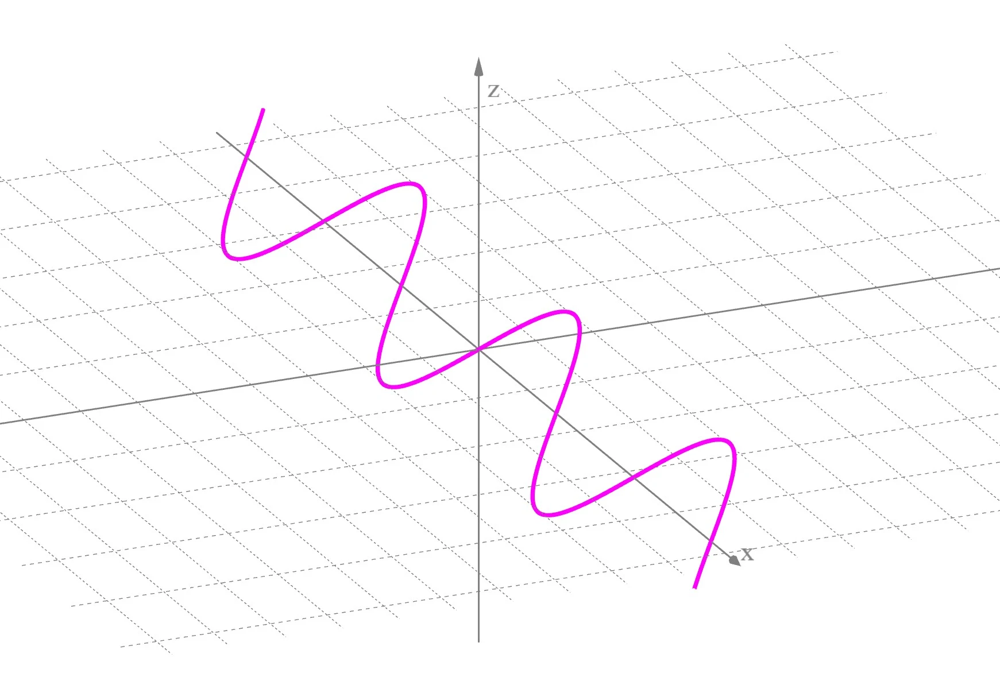

In dieser Einheit werden die Grundlagen parametrischer Kurven und Flächen erklärt.
Bisher haben wir polygone, dreiecke,.. benutzt um objekte zu modellieren und darzustellen -- ist alles supi, aber was wenn wir smoothe, kontinuierliche!, gekrümmte linien/oberflächen haben wollen, die sich am besten auch noch einfach bearbeiten lassen? beispiele für kurven (TODO: mehr stuff)
| Beispiel für den Einsatz von Kurven |
| z.B.: (swirly) Schrift, Rollercoaster, Trinkflasche, Rutsche!!!!, Gitarre, schlange |
wir brauchen ein neues tool: parametrische kurven + flächen. Sie helfen uns beim Design von Objekten mit gekrümmten bestandteilen, bei animationen und kamerafahrten und können für verschiedenste anwendungen als werkzeug verwendet werden.
Unter einer Kurve stellst du dir vermutlich perfekte, smoothe krümmungen vor, wie auch in den obigen Beispielen. Aus mathematischer/computergrafischer Sicht ist eine Kurve aber allgemeiner definiert als irgendeine Linie, ein eindimensionales Objekt also, das in den zwei-, drei- (oder höher-) dimensionalen Raum eingebettet ist.
Wir können solche Kurven auf verschiedene Weisen mathematisch darstellen: als explizite, implizite oder parametrische Darstellung.
In der expliziten Darstellung werden die Koordinaten der Kurve
In der impliziten Darstellung wird die Kurve stattdessen als Lösungsmenge einer Funktion
Wir können uns zum Beispiel mit
|  |
|---|
| Grafische Darstellung der definierten Kurve |
Beide Darstellungsformen haben ihre Nachteile: Zum Beispiel lassen sich in der expliziten Darstellung nicht alle Kurven beschreiben (z.B ein Kreis in der x-y-Ebene), während die implizite Darstellung teils schwer auszuwerten ist und keine definierte Richtung hat. Aus diesen Gründen wird in der Praxis üblicherweise die parametrische Darstellung genutzt.
Die parametrische Darstellung führt einen zusätzlichen Parameter
Die Funktionen
Durch den Parameter
Wir können nun auch einfach die Ableitung einer Kurve definieren, nämlich als Ableitung der Funktion
Die parametrische Darstellung lässt sich folgendermaßen anschaulich vorstellen: Wenn man die Kurve von Anfang bis Ende zeichnen würde, beschreibt die Funktion
(A/D, um
TODO: make size-independent 
Um weitere Analysen durchführen zu können, ohne zahlreiche Spezialfälle betrachten zu müssen, wird oft gefordert, dass eine Kurve regulär ist. Das bedeutet, dass die Ableitung der Kurve für alle
Für verschiedene Anwendungen ist es relevant, die Länge einer Kurve zu kennen.<citation needed> Im Gegensatz zu z.B. einem Polygon, das aus einer begrenzten Menge an Liniensegmenten besteht, und dessen Umfang leicht durch Aufsummieren bestimmt werden kann, benötigen wir für die kontinuierlich definierten Kurven einen anderen Weg, die Länge zu bestimmen. Wenn wir eine Kurve gegeben haben und deren Länge bestimmen möchten, können wir folgendermaßen vorgehen: Wir wählen zunächst eine Menge von Samplepunkten auf der Kurve und verbinden diese durch gerade Linien. Die Länge dieser Linien können wir dann messen und aufsummieren, um eine Annäherung der Länge der Kurve zu erhalten. Diese Annäherung ist besser, je mehr die Linien zwischen den Samples der Kurve an dieser Stelle ähneln. In der Regel werden die Ergebnisse deshalb besser, je mehr Samplepunkte gewählt werden. In der folgenden Demo könnt ihr erkennen, wie sich die Zahl der Samplepunkte auf die Qualität der Annäherung auswirkt:
Natürlich möchten wir nicht nur bei der Annäherung bleiben, sondern auch exakt die Länge einer Kurve ermitteln können. Dafür überlegen wir uns, was passiert, wenn wir den Abstand zwischen den Samplepunkten unendlich klein werden lassen: Die Länge eines solchen Liniensegments entspricht dann genau dem Betrag der Ableitung unserer Kurvenfunktion
TODO: was ist mit unendlichen Kurven? sind die kein thing? zumindest theoretisch? TODO: stetig differenzierbar = def auf den folien?